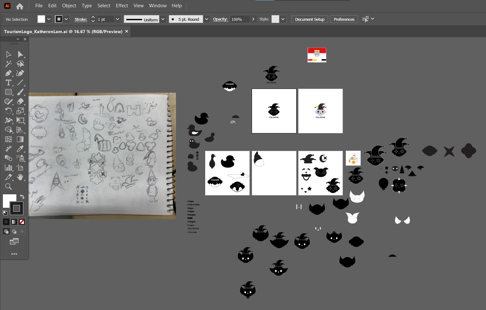
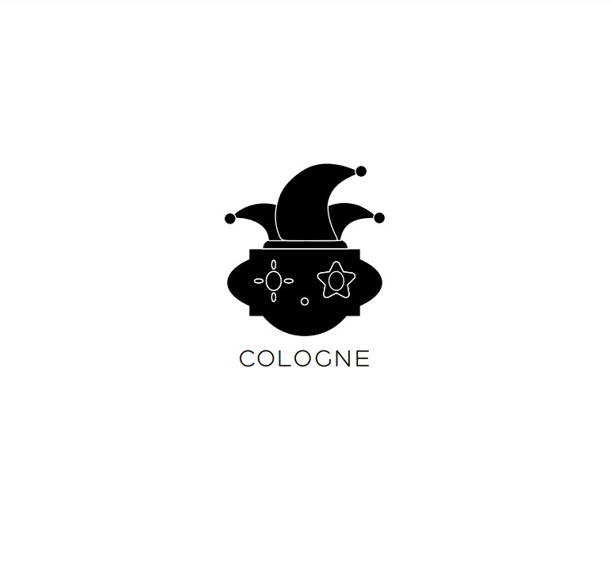
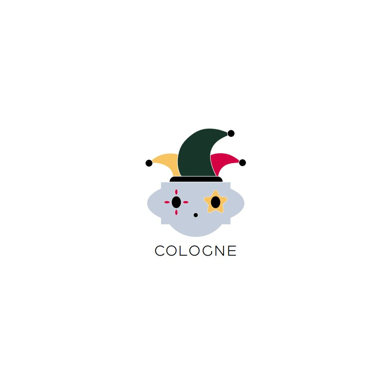

Tourism Logo
Cologne, Germany (Köln)

Cologne is best known for their medivel cathedral, which is the tallest in the world and a UNESCO World Heritage site. Cologne is also the birth place of the German Eau de Cologne, 4711, since 1709 as an alternative to the strong scents of French colognes. The bustling city has a vast history of folklore, art, and political and social movements.
I was insipred by a story of a bet with the devil to complete the building of the cathedral before ducks swim through the canals. I was also inspired by Heinzelmännchen
My finalized logo draws from the logo shape of the 4711 cologne and the makeup and jester hats that many wear during carnival season. The color pallet is pulled directly from the city's flag.

